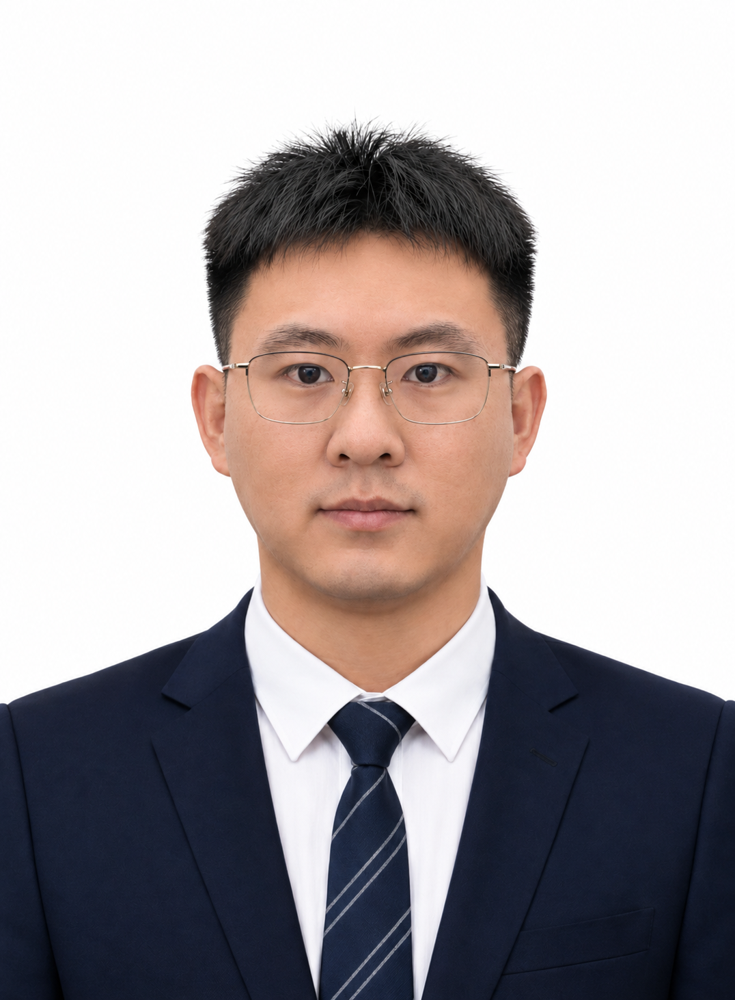

Research on laser metal directed energy deposition, multi-energy-field additive manufacturing, wire–powder co-deposition, melt-pool thermal-fluid dynamics, and material transport.

Yulin Ma 马玉林
Ph.D. Candidate · Materials Science and Engineering
School of Materials Science and Engineering, Ocean University of China
Shandong Key Laboratory of Marine Equipment Materials and Protection
Advisor: Prof. Hongzhi Cui, Dean of the School of Materials Science and Engineering, Ocean University of China; Taishan Scholar Climbing Program expert; valid candidate for the Chinese Academy of Engineering in 2021, 2023, and 2025.
Email: auin.m@outlook.com
Research interests: multi-energy-field laser directed energy deposition, extreme high-speed laser cladding (EHLA), oscillating-laser-assisted wire–powder co-deposition, melt-pool thermal-fluid behavior and multi-material transport, microstructure evolution, and crystal plasticity.
Code & resources: GitHub
Research Profile
My research focuses on multi-energy-field laser directed energy deposition and extreme high-speed laser cladding. I study energy coupling, melt-pool thermal-fluid behavior, material transport and mixing, microstructure control, and mechanical performance in multi-source and multi-material deposition processes. Current work includes oscillating-laser-assisted wire–powder co-deposition, high-fidelity multiphysics simulation, laser-cladding process optimization, and wear/corrosion-resistant coating design.
As of October 2026, I have published or submitted 12 papers and applied for 11 invention patents. My first-author and co-first-author work includes papers in or under review at Additive Manufacturing, Surface & Coatings Technology, Materials & Design, and related journals, together with Chinese and international patent applications.
News
- 2026: “Understanding Multi-material Transport and Homogenization via Controlled Melt Pool Flow in Dual-Laser Wire-Powder Additive Manufacturing” submitted to Additive Manufacturing and currently under review.
- 2026: “Process Stability and Properties Control of Extreme High-speed Laser Cladding with High Power and High Powder Feeding Rate” submitted to Surface & Coatings Technology and currently under review.
- 2026: Invited talk at the Second Youth Forum on Advanced Alloy Materials and Processing.
- 2025: Attended the First Conference on Innovation and Development of Laser Manufacturing and Additive Manufacturing and delivered a keynote presentation on behalf of my advisor.
Education & Research Experience
Education
2023.09–2027.06, Ocean University of China, Ph.D.
2020.09–2023.06, Shandong University of Technology, M.Eng.
Research on additive manufacturing of flexible devices, piezoelectric composite nanofibers, COMSOL simulation, and numerical modelling of laser–arc hybrid additive manufacturing/welding.
2015.09–2019.06, Shandong University of Technology, B.Eng.
Worked on robotic mechanical design and 3D printing and participated as a core mechanical-team member in ROBOCON and RoboMaster competitions.
Doctoral Research Experience
2027.01–2030.12，国家自然科学基金联合基金项目：“海工超厚异质板复合能场增材多尺度结构调控及抗重度腐蚀磨损”
负责“复合能场高效沉积梯度增材制造及多参数预测”相关研究。围绕激光/等离子复合能场、丝粉协同增材制造及宽束斑重熔开展实验，研究多热源能量配比和材料输入方式对熔池流动、成形质量及缺陷的影响；构建热-流-力耦合模型，分析温度场、熔池动力学、残余应力及凝固组织演化，并结合在线监测开展工艺窗口优化与成形质量预测。
2024.01–2026.12，驻鲁部属高校“十四五”服务山东重点建设项目：“海工装备耐蚀耐磨高强韧钢板开发与示范应用”
承担“抗重度腐蚀磨损钢板精细梯度冶金”及“构型化耐磨蚀强化设计与制备”相关研究。开展激光/等离子复合梯度冶金、粉/丝协同送进及高速表面熔覆研究，分析工艺参数对熔池行为、组织演化、界面特征及成形质量的影响；结合有限元/相场模拟以及 SEM、EBSD 等表征手段，优化梯度组织与耐磨耐蚀性能，并参与构型化涂层工艺开发、性能测试及工程化验证。
2026.03–2027.11，山东能源集团兖矿东华重工有限公司项目：“构型化耐磨蚀强化设计与制备技术及典型工况示范应用”
开展超高速激光熔覆装备、工艺及耐磨耐蚀涂层工程化研究。参与高功率熔覆头、原位监测及高速运动控制系统开发，研究功率、速度、送粉量等参数对熔池稳定性、成形缺陷及涂层性能的影响；开展涂层材料设计、工艺窗口优化和组织性能评价，并参与两套超高速激光熔覆机床系统交付以及大型液压立柱/油缸的 1:1 试制、中试与典型工况示范应用。
2025.02–2026.02，山东钢铁股份有限公司项目：“海工钢高能束复合焊接工艺及多相组织调控技术分析与测试”
开展深海采矿用高强钢高能束复合焊接工艺及多相组织调控研究，分析焊接热输入和工艺参数对焊缝成形、热影响区组织演化及力学性能的影响；建立焊接工艺—多相组织—力学性能关联，构建热—冶金—力耦合有限元模型，分析焊接温度场、相变行为及残余应力演化，并结合组织表征和性能测试完成模型验证与工艺优化。
2024.05–2025.12，山钢莱芜钢铁集团银山型钢有限公司项目：“复杂工况用高强耐磨钢多级组织调控与性能测试评价技术”
负责高强耐磨钢热变形工艺模拟与组织演变研究。采用 Gleeble 热模拟开展不同变形温度、应变速率及变形量条件下的热压缩实验，结合 SEM、EBSD、TEM 等表征分析动态再结晶、晶粒演化和冷却过程组织转变规律，建立热变形参数—组织—性能关系，并构建热加工图和热加工工艺窗口。
Journal Publications
Understanding Multi-material Transport and Homogenization via Controlled Melt Pool Flow in Dual-Laser Wire-Powder Additive Manufacturing
Y. Ma, F. Cao, Y. Zhang, Y. Zhu, T. Liu, C. Wang, H. Zhang, H. Cui.
Process Stability and Properties Control of Extreme High-speed Laser Cladding with High Power and High Powder Feeding Rate
Y. Ma, W. Li, H. Zhang, Y. Zhu, Y. Zhang, X. Wei, T. Liu, H. Cui.
Formation of a novel (Cr,V)(C,N)@Si-rich amorphous core–shell structure in Fe–Cr–B alloy coatings towards superior strength and wear resistance
Y. Ma, H. Zhang, Y. Zhu, Y. Zhang, C. Wang, T. Liu, Q. Du, H. Cui.
Effect of Y₂O₃ Nanoparticles on Eutectic Networks and Wear and Corrosion Resistance of Fe-Cr-Ni-B Coatings via Laser-Cladding
T. Liu, Y. Ma (共同第一作者), H. Cui.
Piezoelectric materials for flexible and wearable electronics: A review
Y. Wu, Y. Ma, H. Zheng, S. Ramakrishna.
ZnO@Ag Modified Piezoelectric Fibers for Higher Sensitivity and Enhanced Energy Harvesting
Y. Ma, M. Liu, Y. Feng, H. Zheng, Y. Wu.
Nano PDA@Tur-Modified Piezoelectric Sensors for Enhanced Sensitivity and Energy Harvesting
R. Yang, Y. Ma (共同第一作者), J. Cui, M. Liu, Y. Wu, H. Zheng.
Numerical simulation and experimental study of hybrid laser-electric arc welding between dissimilar Mg alloys
Y. Ma, J. Zhu, L. Zhang, Z. Ren, Y. Zhao, W. Wang, X. Wang, X. Hui, Y. Wu, H. Zheng.
On the size-dependent bending and buckling of the partially covered laminated microplate
G. Fu, Z. Zhang, Y. Ma, H. Zheng, Q. Guo, X. Zhuang.
Patents
一种摆动激光丝粉共沉积高通量样品阵列增材制造方法
崔洪芝；马玉林；张宏伟等。中国发明专利，ZL202610208930.9。
OSCILLATORY LASER WIRE-POWDER CO-DEPOSITION HIGH-THROUGHPUT SAMPLE ARRAY ADDITIVE MANUFACTURING METHOD
Hongzhi Cui; Yulin Ma et al. 国际专利，美国/日本/俄罗斯申请。
一种轴类零件表面超高速激光熔覆涂层的短流程制备方法及所得涂层
崔洪芝；马玉林；李文权等。中国发明专利，CN121737705A。
一种高反射率金属表面制备难熔金属涂层的方法及涂层和应用
崔洪芝；黄伟；马玉林；赵辉等。中国发明专利，CN120272902A。
一种双波长激光高效熔覆方法及所得涂层和应用
崔洪芝；赵辉；马玉林等。中国发明专利，CN121972680A。
一种可穿戴压电传感器的制备方法及压电测试实验装置及应用
吴永玲；李光辉；孙庆民；马玉林等。中国发明专利，ZL202210591419.3。
Talks & Honors
- 2026 第二届先进合金材料与加工青年论坛邀请报告
- 2025 第一届激光制造与增材制造创新发展大会，代导师作主旨报告
- 2024 山东省优秀硕士学位论文
- 2023 山东省优秀毕业生
- 2023 研究生国家奖学金
- 2022 中国大学生机械创新创意大赛“明石杯”一等奖
- 2018 全国大学生机器人大赛 ROBOCON 全国一等奖
Contact
马玉林 / Yulin Ma
School of Materials Science and Engineering, Ocean University of China
Shandong Key Laboratory of Marine Equipment Materials and Protection
Email: auin.m@outlook.com
GitHub：github.com/yline0829